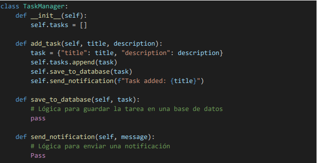
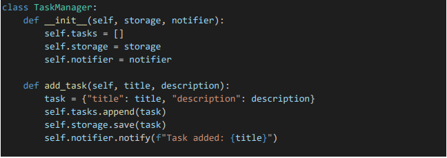
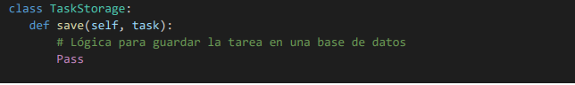
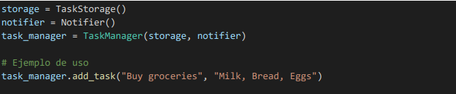

Los métodos de estimación de proyectos son técnicas que te ayudan a estimar con precisión el tiempo, el presupuesto y los recursos necesarios para completar un proyecto con éxito.
Modelo COCOMO (Constructive Cost Model)
Desarrollado por Barry Boehm en 1981, el modelo COCOMO es uno de los modelos de estimación de costos más conocidos y utilizados. Hay tres versiones principales del modelo COCOMO:
COCOMO Básico: Estima el esfuerzo necesario para desarrollar un proyecto basado en el tamaño del software, medido en líneas de código (LOC). La fórmula básica es:
𝐸 = 𝑎 × (𝐾𝐿𝑂𝐶)𝑏
donde E es el esfuerzo en persona-meses, KLO es el número de mil líneas de código, y a y b son parámetros ajustables basados en la complejidad del proyecto
COCOMO Intermedio: Añade factores de costo adicionales que reflejan características del proyecto, como la experiencia del equipo y las características del software. Usa una fórmula más compleja que incluye multiplicadores para estos factores.
COCOMO Avanzado: Incluye un modelo más detallado que considera fases del ciclo de vida del software y otros factores, proporcionando una estimación más precisa. Se basa en un enfoque de regresión múltiple que considera 15 factores de costo.
Método de Puntos de Función (Function Point Analysis - FPA)
El método de puntos de función se centra en medir el tamaño del software basado en la funcionalidad que ofrece al usuario. Fue desarrollado por Allan Albrecht en 1979 y se basa en el conteo de los componentes funcionales del software, tales como:
Cada componente se clasifica y se le asigna un valor en puntos de función. La fórmula para estimar el tamaño del software es:
Puntos de Función=Suma de los puntos asignados a cada componente.
Comparación y Elección del Modelo
Precisión y Relevancia: Si el proyecto tiene especificaciones funcionales bien definidas y se espera que cambie poco, el Método de Puntos de Función puede ofrecer una estimación más relevante ya que mide la funcionalidad en lugar de las líneas de código. Sin embargo, si se está trabajando en un proyecto donde se puede estimar el tamaño en LOC con precisión, el Modelo COCOMO puede ser más útil, especialmente en sus versiones más avanzadas que ajustan la estimación basándose en múltiples factores.
Tipo de Proyecto: El Modelo COCOMO puede ser más útil para proyectos grandes y complejos donde se puede estimar el tamaño del código, mientras que el Método de Puntos de Función es más adecuado para proyectos donde la funcionalidad y los requisitos están claramente definidos.
En resumen, la elección entre COCOMO y el Método de Puntos de Función dependerá de la naturaleza del proyecto, la disponibilidad de datos y la precisión requerida en la estimación.
Una estimación de software es una predicción de cuánto tiempo durará o costará su desarrollo y mantenimiento. Si se trata de una estimación de tiempo, el esfuerzo puede expresarse en horas-persona u otra unidad, si se trata de estimación de costo, se puede expresar en la moneda de preferencia.
La modularidad es el principio de dividir un sistema en partes o módulos independientes y manejables. Cada módulo debe tener una funcionalidad específica y debe ser independiente de otros módulos tanto como sea posible
La cohesión se refiere a la medida en que las operaciones dentro de un módulo están relacionadas entre sí y contribuyen al mismo propósito. Un módulo con alta cohesión realiza una tarea específica y clara.
El acoplamiento se refiere al grado en que un módulo depende de otros módulos. Un acoplamiento bajo significa que los módulos son independientes entre sí, mientras que un acoplamiento alto indica que los módulos están fuertemente interconectados.
La abstracción es el principio de ocultar los detalles complejos de implementación y mostrar solo la funcionalidad esencial. Permite al desarrollador trabajar con conceptos de alto nivel sin preocuparse por los detalles específicos.
Ejemplo de Aplicación del Principio de Cohesión
Vamos a aplicar el principio de cohesión en el desarrollo de un sistema simple de gestión de tareas. En este sistema, queremos asegurarnos de que cada módulo tiene una única responsabilidad bien definida.
Diseño Inicial (Baja Cohesión)
En un diseño inicial, podríamos tener una clase TaskManager que maneje tanto la lógica de tareas como el almacenamiento de datos y las notificaciones:
En este diseño, TaskManager tiene múltiples responsabilidades: gestionar tareas, almacenar datos y enviar notificaciones. Esto resulta en baja cohesión porque el módulo está realizando varias tareas no relacionadas directamente entre sí.
Aplicación del Principio de Cohesión
Para aplicar el principio de cohesión, podemos dividir TaskManager en varios módulos, cada uno con una única responsabilidad:
Módulo de Gestión de Tareas
Módulo de Almacenamiento
Módulo de Notificaciones
Uso del Sistema
Clientes/Usuarios Finales
Patrocinadores del Proyecto
Gerente de Proyecto
Equipo de Desarrollo (Desarrolladores, Programadores)
Diseñadores UX/UI
Equipo de Control de Calidad (QA)
Arquitecto de Software
Administradores de Sistema y Infraestructura
Equipo de Control de Calidad (QA)
Reguladores y Cumplimiento Legal